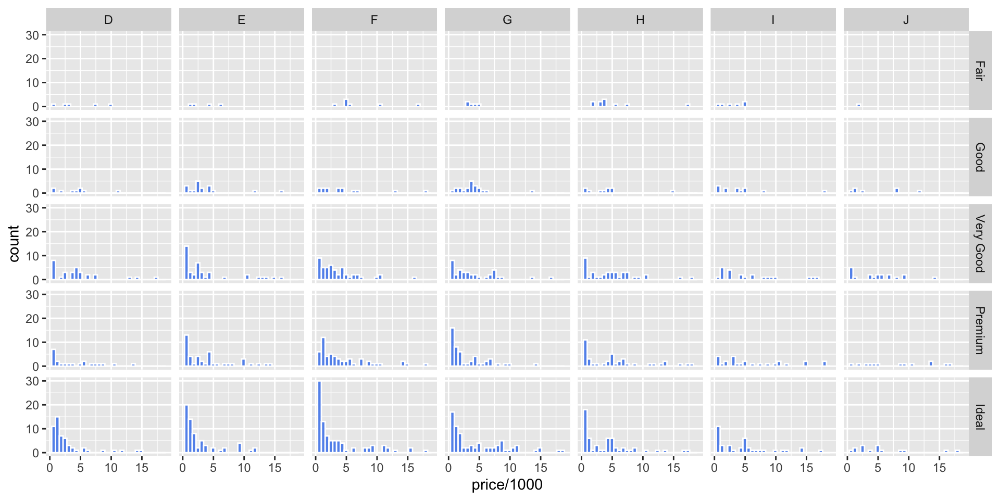

R Basics
Jonas, Pietro & Hauke
Before we start
If you haven’t done so already, please install R as well as RStudio now:
Outline
Session 1
In this session we will
- make sure R & RStudio are up and running on all of your machines,
- show why we like R,
- introduce you to RStudio’s User Interface,
- demonstrate some basic concepts and data structures.
Session 2
- Read in and export data
- Explore your data
Exercise & Break
- Manipulate data
- Analyze data
Session 3
- Visualize data
Exercise & Break
- Analysis Template: putting everything together
- R6 intro (?)
Exercise & Time for Questions
Welcome to Session 1
Why we like R
Scripts vs. WYSIWYG (Excel or SPSS)
Analyses conducted in R are transparent, easily shareable, and reproducible. This helps not only others to run and understand your code but also your future selves.
Open Source
R is 100% free of charge and as a result, has a huge support community. it means that a huge community of R programmers will constantly develop an distribute new R functionality. It also means that you find a lot of help online as others ran into the same problems as you do.
Versatility
Yes, R is not Python. You can still use it to do a lot of stuff. If you can imagine an analytical task, you can almost certainly implement (and automate) it in R.
RStudio
RStudio helps you write R code. You can easily and seamlessly organize and combine R code, analyses, plots, and written text into elegant documents all in one place.
Examples & Use Cases
R & RStudio
RStudio is an integrated development environment (IDE) for R. It helps the user effectively use R by making things easier with features such as:
- Syntax highlighting,
- Code completion,
- Smart indentation,
- Workspaces (more on that later), etc.
RStudio GUI
Opening RStudio, you will see four window panes:
- bottom left: The
Consoleexecutes code. You can use it to test code that is not saved. - upper left: The
Sourceopens your scripts, markdown documents or notebooks. It is the one you’ll use the most as it allows you to write and save both comments and code. You have to actively run the code, though. - upper right: The
Environment Panedisplays the objects (e.g. data, variables, custom functions) you can access in your current memory. - bottom right: This pane shows you many different, yet important, tabs. You can browse your directory, view plots, get help and see installed packages.
See this cheat sheet
Use comments
- You can make comments using hashtags
#. - Text behind
#will not be evaluated. - You can use this to annotate your code or
- to comment out code blocks you don’t need currently.
Sections
You can also use # some title ----- to create foldable sections in your code.
Use comments
source: reddit
Vamos!
Operators
In the most simple form, R is an advanced calculator. Operators are symbols you know from any other program (Excel, etc.), such as + or -.
| Operation | Description |
|---|---|
| x + y | Addition |
| x - y | Subtraction |
| x * y | Multiplication |
| x / y | Division |
| x ^ y | Exponentiation |
| x %/% y | Integer Division |
| x %% y | Remainder |
Algebra
Assign Values to Objects
- R can keep several objects in memory at the same time
- To distinguish them, objects have names.
- Objects are assigned with
<-or=(we recommend the former).
Assign Values to Objects
To inspect the objects you have just created you can call them.
Alternatively, you can take a look into your Environment. Do you remember where to find it?
Naming
Conventions
- Variable and function names should be lowercase.
- Use an underscore
_to separate words within a name. - Strive for names that are concise and meaningful (this is not easy!).
Case Sensitivity
Uppercase and lowercase letters are treated as distinct.
Warning
Importantly, be careful to not reassign an object unintentionally.
Warning
Where possible, avoid using names
- of special characters,
- existing functions and
- existing variables.
Doing so will cause confusion for the readers of your code.
Note
Also, try to avoid special symbols such as +, for example. If you really need them, you can escape them using the back tick `
Boolean Algebra
| Operation | Description | Output |
|---|---|---|
| x < y | Less than | TRUE if x is smaller than y. FALSE otherwhise |
| x <= y | Less or equal than | TRUE if x is smaller or equal than y. FALSE otherwhise |
| x > y | Greater than | TRUE if x is greater than y. FALSE otherwhise |
| x >= y | Greater or equal than | TRUE if x is greater or equal than y. FALSE otherwhise |
| x == y | Exactly equal to | TRUE if and only if x is equal to y. FALSE otherwhise |
| x != y | Not equal to | TRUE if and only if x is not equal to y. FALSE otherwhise |
| !x | Negation | TRUE if x is equal to FALSE or 0. FALSE otherwhise |
| x | y | OR | TRUE if x or y or both are TRUE . FALSE otherwhise |
| x & y | AND | TRUE if and only if x and y are both TRUE . FALSE otherwhise |
Boolean Algebra
Tip
A Boolean expression is a logical statement that is either TRUE or FALSE.
Note
You can also abbreviate TRUE and FALSE with T and F.
Break
please answer the survey
Data Types
There are many different data types. We will focus on the most basic ones:
| Data Type | Example |
|---|---|
| Numeric | 42 |
| Character | "forty two" |
| Logical | TRUE |
Tip
Use class() to identify data types. class(42) will return numeric, for instance. What’s the output of class(NA)?
Vectors
We can combine objects c() command to create a vector. The documentation says:
The default method combines its arguments to form a vector. All arguments are coerced to a common type which is the type of the returned value […].
Subsetting
[] is your friend.
Functions
So far, you have seen at least two built-in functions: class() & c(). Another useful function is mean().
You can recognize a function either via class()1 or by the parentheses.
To call a function, you have to provide some argument(s). The mean() function needs some sort of vector, for instance.
How to get Help?
Assume you want to learn how to use the mean() function.
?meanorhelp(mean)- Use stackoverflow
Packages
Packages are the fundamental units of reproducible R code. They include reusable R functions, the documentation that describes how to use them, and sample data.
The comprehensive R Archive Network currently features 18.694 packages.
The majority of packages is quite niche-specific.
To get started, we’ll show you how to install Tidyverse, an opinionated collection of R packages designed for data science. All packages share an underlying design philosophy, grammar, and data structures.
Exercise
Your turn
- Install
tidyverse - Do something
- Load
tidyverse - Do it again
The %>% Operator
Let’s apply some functions. Can you guess the outcome?
We can do the same using %>%:
Your turn
- create a vector called
veccontaining1,2,3,99 - calculate the
mean()using both methods - round the results (one digit) and assign it to objects called
res1&res1 - show that both are equal
Exercise
Generate three objects
my_pishould contain the number pi (try out the commandpi)- a vector, called
a, should contain the numbers1to3 bshould be the multiplication of1*pi,2*pi3*pi
Environment
- We can see all objects currently in our workspace by typing
ls(). - You can remove objects using
rm()
Workspace

Don’t!
Bonus: Scripts, Markdown & Project
- Scripts are a great way to document how you analyzed your data.
- Like a recipe, scripts make it easy (for you and others) to reproduce your process exactly.
- You can also use RMarkdown, which allows you to blend code chunks with text.1
- To make your code even more organized and reproducible, use R Projects (We’ll show an example).
Ressources
swirl is a great start as it teaches you R interactively, at your own pace, and right in the R console! Run the following code to get started.
Ressources
Resources we found helpful creating the slides:
Welcome to Session 2
Recap Session 1 - What we did
- Setting up R
- Get to know the UI
- Objects, classes, operations
- Packages
Any experienced difficulties? Anything we should repeat?
Recap: Packages in R
Beyond base R’s core functions, packages provide additional functionality for (almost) all of your problems.
Some of the most widely-used packages are included in the tidyverse collection install.packages("tidyverse") and library(tidyverse) brings you most of the functions you will need (at this point):
For example:
- manipulate data:
dplyr - tidy data:
tidyr - visualize data:
ggplot2
There are many more packages available
Recap: Practical Advice
Pitfall
Failing to load a package is a common error source - one you can easily avoid by loading everything you need right at the start.
This is how the very beginning of your code could look like:
Overview Session 2 - Working with data
- Read in and export data
- Explore your data
Exercise & Break
- Manipulate data
- Analyze data
Exercise & Time for Questions
What’s next: We need some data to work with!
Reading in and storing data
Data can come in various file formats, e.g., .csv, .xlsx, .sav etc. We can read all these files into our environment.
For that, we always specify the location path to the local data source (and we directly assign our data to an object called data)
Reading in
Good to know
We recommend text files (.csv or .txt), however, there are packages for reading in other file formats (haven, foreign or rio).
Exploring data I/II
You should know how your data is structured before processing it and R has some neat functions to do that:
head(data)shows the first few rows of your datanames(data)shows the column or variable names of your dataview(data)shows the entire data in a new window
lfdn external_lfdn tester dispcode lastpage
1 2 0 0 31 6061029
2 4 0 0 31 6061029
3 11 0 0 31 6061029
4 13 0 0 31 6061029
5 14 0 0 31 6061029 [1] "lfdn" "external_lfdn" "tester" "dispcode"
[5] "lastpage" "quality" "duration" "expectation"
[9] "r_experience" "interest_data"Exploring data II/II
To get a feeling for your data, you can investigate summary statistics:
We can calculate the mean rent of this course individually:
How about the course’s gender distribution?
Or the mean shoe size by gender?
Break (10min) and Exercises
Load the survey data and assign it to a dataframe object named
df(if not done so already)How many rows and columns does
dfcontain?Calculate simple summary statistics for the
dfCalculate the standard error for the variable
shoesize
Manipulate your data
Some important functions from dplyr:
selectChoose which columns to include.filterFilter which rows to include.arrangeSort the data, by size for continuous variables, by date, or alphabetically.group_byGroup the data by a categorical variable.n()Count the number of records. Here there isn’t a variable in the brackets of the function, because the number of records applies to all variables.mutateCreate new column(s) in the data, or change existing column(s).renameRename column(s).bind_rowsAppend one data data frame to another, combining data from columns with the same name.
Manipulate: select and filter
gender rent
1 2 NA
2 2 3000
3 1 950data %>%
filter(gender==1 & shoesize ==44) %>% select(gender, shoesize) # show just males with a shoesize of 44 gender shoesize
1 1 44
2 1 44
3 1 44Recap: %>%(pipe) operator
%>% makes code easier to write and read. It works similar to a + sign and is an integral part of the tidyverse syntax
Manipulate: arrange and n
data %>%
filter(gender == 2 & rent >= 900) %>% # only females with rent above 900CHF
arrange(desc(rent)) %>% # sort by descending rent
select(gender, rent) # show only the columns gender and rent gender rent
1 2 3000data %>%
filter(gender == 2) %>% # only female
summarise(
n = n()) # number of instances written in new column with name n n
1 5summarise()
summarise() reduces multiple values down to a single summary.
Manipulate: group_by
data %>%
group_by(gender) %>% # group by gender
summarise(
n = n(), # counte the instances and write in column named n
avg_height = mean(height, na.rm = TRUE),
avg_rent = mean (rent, na.rm = TRUE)) # calculate the mean height and write in avg_height column# A tibble: 2 × 4
gender n avg_height avg_rent
<int> <int> <dbl> <dbl>
1 1 8 182. 616.
2 2 5 158. 1212 Removing NAs
na.rm allows you to exclude instances of missing value. This helps to prevent error messages. But check why is that data missing!
Manipulate: mutate and rename
gender sq_height
1 2 23104
2 2 21025
3 1 34225
4 1 32400
5 1 34225 lfdn external_lfdn tester dispcode lastpage
1 2 0 0 31 6061029
2 4 0 0 31 6061029
3 11 0 0 31 6061029
4 13 0 0 31 6061029
5 14 0 0 31 6061029Put it all together
data %>% # Start with the data
filter(r_experience <= 6) %>% # Oonly those with R experience below 6
group_by(gender) %>% # Group by gender
summarise(
age.mean = mean(age), # Define first summary...
height.mean = median(height), # you get the idea...
n = n()) %>% # How many are in each group?
select(age.mean, height.mean, n)# A tibble: 2 × 3
age.mean height.mean n
<dbl> <int> <int>
1 22.9 185 7
2 27.4 154 5Help
It can sometimes be hard to understand what a command is doing with the data. Tidy data tutor visualizes what is happening to your data in every code step which is extremely helpful.
Break (10 min) and Exercises
Build a new dataframe called
df_demographicsthat contains just the demographic information from our survey dataRename the
gendercolumn tosexcolumn in this dataframeCalculate the mean age by gender in this dataframe
Calculate the logarithmic rent of all male participants of the AIBS course and store it in a column named
log_rent
Advanced: Join two dataframes
inner_join: To keep only rows that match from the data frames, specify the argumentall=FALSE. To keep all rows from both data frames, specifyall=TRUE.left_join: To include all the rows of your data frame x and only those from y that match.
Example: Calculate year born of members of this class:
age_table <- read.csv(file = "data/raw/age_table.csv") # read in age table from directory
data_new <- left_join(data, select(age_table, c(X2022_after, year_born)), by = c("age" = "X2022_after")) # perform join to get the birthyear
data_new %>% select(age, year_born) %>% filter(age<24) # show the results age year_born
1 22 2000
2 22 2000
3 21 2001
4 23 1999
5 22 2000
6 23 1999
7 22 2000Advanced: Long to wide dataformat
data_long to data_wide
The arguments to pivot_longer():
- data: Data object
- names_from: Name of column containing the new column names
- values_from: Name of column containing values
Reverse Way
The reverse way from wide to long format via pivot_wider
Analyze your data: Statistical Analysis with R
You (R) can do a lot:
- t-Test
- ANOVA
- Regression
- Structural Equation Models
- Multilevel Models
- Machine Learning Models
- Bayesian Statistics
- …
Stats 1: t-Test
Recap: Mean comparisons (>= 2 groups)
Welch Two Sample t-test
data: rent by gender
t = -0.99236, df = 3.0711, p-value = 0.3926
alternative hypothesis: true difference in means between group 1 and group 2 is not equal to 0
95 percent confidence interval:
-2481.5 1290.0
sample estimates:
mean in group 1 mean in group 2
616.25 1212.00 rstatix::t_test(data = data, formula = rent~gender, alternative = "two.sided") # the same works with other packages, here `rstatix`# A tibble: 1 × 8
.y. group1 group2 n1 n2 statistic df p
* <chr> <chr> <chr> <int> <int> <dbl> <dbl> <dbl>
1 rent 1 2 8 5 -0.992 3.07 0.393Notice the difference in the code?
Caution
There are similar functions t.test and t_test from different packages using different syntax
Stats 2: Analysis of Variance
Recap: Mean comparisons (> 2 groups)
Is there a difference in XYZ?
data$course <- as.factor(data$education) # this ensures our factor to be of the right class
summary(aov(formula = rent~education, data = data)) Df Sum Sq Mean Sq F value Pr(>F)
education 1 573944 573944 1.176 0.304
Residuals 10 4882419 488242
1 Beobachtung als fehlend gelöschtCaution
The underlying grouping variable needs to be as.factor. Always check first!
Stats 3: Regression
Recap: Relationship between two (or more) variables
Is there a relationship between height and shoesize?
summary(lm(formula = shoesize~height, data = data)) # runs a linear model and provides statistical summary
Call:
lm(formula = shoesize ~ height, data = data)
Residuals:
Min 1Q Median 3Q Max
-2.6840 -1.2487 -0.3436 0.9486 4.0510
Coefficients:
Estimate Std. Error t value Pr(>|t|)
(Intercept) 6.96106 5.93868 1.172 0.265895
height 0.19729 0.03421 5.767 0.000125 ***
---
Signif. codes: 0 '***' 0.001 '**' 0.01 '*' 0.05 '.' 0.1 ' ' 1
Residual standard error: 1.871 on 11 degrees of freedom
Multiple R-squared: 0.7514, Adjusted R-squared: 0.7288
F-statistic: 33.26 on 1 and 11 DF, p-value: 0.0001252Remember: Live-saving advice: How to get help when stuck?
?lm()will immediately provide you with Help in the panel- CRAN documentations and Cheat Sheets are a comprehensive source of support (hard to read at the beginning)
- Google is your friend: Chance is high that someone else had a very similar question to yours on stackoverflow.com; try different search terms and exact language
Jump in: Time for exercising
Basic Exercises
Regress
rentonheightandshoesizeCalculate the mean difference between
r_experiencebyclassand perform a t-testDo
r_experienceandinterest_datacorrelate?
Advanced exercises:
- Add a column containing the shoe size converted to the US system and correlate US with EU shoesize
- Hint: load the
shoesizesdataset from Canvas and look for potential information that might match with our data
Prepare your questions for tomorrow’s Q&A
Specific to your projects?
Put them on Canvas or bring them to the lecture
Welcome to Session 3
Recap Session 2
- Read in and export data
- Explore your data
- Manipulate data
- Analyze data
Any experienced difficulties? Anything we should repeat?
Recap: import and export data
Reading in
Saving
Recap: Exploring data
head(data)shows the first few rows of your datanames(data)shows the column or variable names of your dataview(data)shows the entire data in a new window
Overview Session 3
- Visualization
- Analysis Template: putting everything together
- R6 intro (?)
- Questions
Why visualization?
Data visualization is the practice of representing data in a graphical form (e.g. plots). This is a powerful way to visualize information in a way that is understandable to the majority of the audience. For this reason it is crucial to select the type of visualization that best fits our data and our goal!
Ggplot bulding blocks
ggplot()initializes the coordinate system of our visual representation. It takes as input the dataset of interest.geom_*()specifies the type of visualization. It needs a mapping argument which maps the variables from the dataset to the objects on the plot.aes()is assigned to the mapping argument. It takes as argument the values corresponding to the x and y axis, as well as other plot-specific characteristics (e.g., color, size, fill,…)- Additional functions can be added to to specify labeling and thematic characteristics (
ggtitle(),xlab(),ylab(),theme()).
Remember: It is always possible to get help regarding these function by running ?functionName
Type of data visualization I/III
Univariate visualizations
Univariate graphical representation visualize the distribution of data from a single continuous or discrete variables.
- Bar plot: representation of categorical categorical data.
- Histograms, distribution plot and box plot: representation of the distribution of numerical data.
Type of data visualization II/III
Bivariate visualizations
Bivariate visual analysis shows relationship between two variables. It is important to select the correct visualization type according to the variables analysed:
- Continuous v Continuous
- Discrete v Discrete
- Discrete v Continuous
Type of data visualization II/III
Bivariate visualizations (Continuous v Continuous)
Type of data visualization II/III
Bivariate visualizations (Discrete v Discrete)
Type of data visualization II/III
Bivariate visualizations (Discrete v Continous)
Type of data visualization III/III
Multivariate visualizations
Multivariate presentation show the relationship of 3 or more variables. There are two main approaches grouping and faceting.
- Grouping represents the data on a single plot when the x and y axis represent two variables and the third is displayed through visual elements such as colors, dot shape, size, etc.
- Faceting simply include different plot in one single visualization.
Type of data visualization III/III
Multivariate visualizations (Grouping)
Type of data visualization III/III
Multivariate visualizations (Faceting)

https://rkabacoff.github.io/datavis/
Resources
- Easy to read book chapter
- A full book
- List of geoms
- As always: Stackoverflow
Break
Please download the template